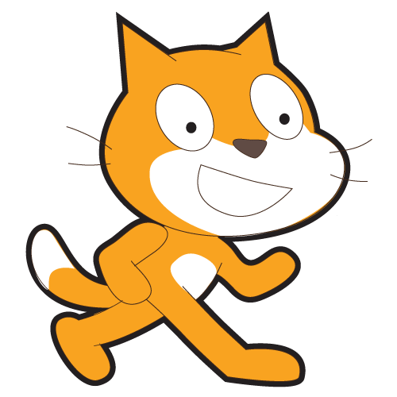
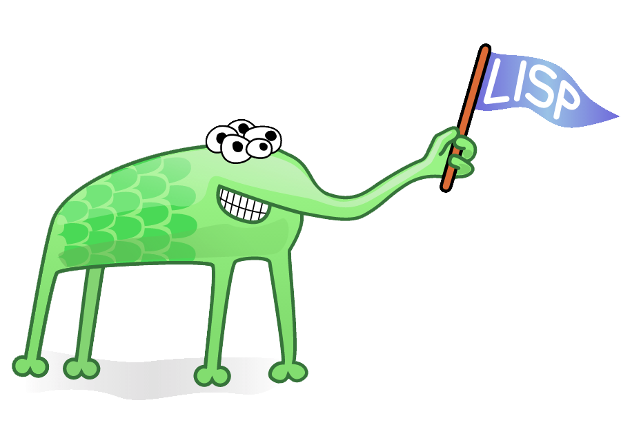

Programmers track the success of computer languages the way other people track sports rankings, commenting on Web forums such as Reddit (where many languages get their own “subreddit,” and reddit.com/r/programming currently has 620,202 readers), or Hacker News, run by the venture capital firm Y Combinator (a company named after a special kind of function that operates on other functions), or Lambda the Ultimate (named after a series of papers written mostly in the 1970s about the influential programming language Scheme—the more inside-baseball the name, the nerdier the subject matter).
There are hundreds of programming blogs. Many large corporations let their engineers blog (a generous gift, given how many recruiters are hovering). Discussions about programming go on everywhere, in public, at all times, about hundreds of languages. There is a keen sense of what’s coming up and what’s fading out.
It’s not simply fashion; one’s career as a programmer depends on demonstrating capacity in one or more languages. So there are rankings, frequently updated, rarely shocking. As of April 15, the world’s most-used computer languages, according to the Tiobe index (which uses a variety of indicators to generate a single ranking for the world of programming), are Java, C, C++, Objective-C, and C#, followed by JavaScript, PHP, and Python. The rankings are necessarily inexact; another list, by a consulting firm called RedMonk, gives JavaScript the top spot, followed by Java. There are many possible conclusions here, but the obvious one is that, all things being equal, a very good Java programmer who performs well in interviews will have more career options than a similar candidate using a more obscure language.
If you code, by the time a language breaks through to the top 10 or 20, you’ve heard of it, read blog posts about it, heard people lament how terrible or wonderful or misguided it is, possibly watched a few video tutorials, or played with it a little. Taking new languages out for a spin is a good thing for a programmer to do. Often all you have to do is download some files and write a couple lines of code, then decide if you want to go further. Most languages are free to download and use.
Why do people construct and then give away free languages? Well, the creation of a good computer language is the work of an apex programmer. To have produced a successful language is acknowledged as a monumental effort, akin to publishing a multivolume history of a war, or fighting in one. The reward is glory.
Changing a language is like fighting that war all over again, and some languages have at times been trapped in a liminal state between their old, busted selves, and their new, promised version. Perl 5, released in the mid-1990s, was a language uniquely suited to the World Wide Web, and it grew as the Web grew; Perl 6 was supposed to be better in every way, and a redesign began with grand pronouncements in 2000. But after 15 years of people working continually and often for free on a project they consider in the public interest, there’s still no official Perl 6. (Latest ETA: Christmas 2015.)
The Python language community, keenly aware of the Perl community’s problems, decided to make necessary but difficult changes to the language as part of the transition from Version 2 to Version 3. They would modernize, clean up rough edges—but avoid grand reinventions. Development of Python 3.0 started in 2006; the first working version came out in 2008; and in 2015, the transition is ongoing.
Making a new language is hard. Making a popular language is much harder still and requires the smile of fortune. And changing the way a popular language works appears to be one of the most difficult things humans can do, requiring years of coordination to make the standards align. Languages are large, complex, dynamic expressions of human culture.
CODE ATLAS Stack Overflow, a website for coders, asked users around the world to tell them which languages and technologies they’ve worked with over the past year. JavaScript was the most-selected language by far. Here, we show which technologies are used at an unusually high rate in each country.
The Beauty of the Standard Library
The true measure of a language isn’t how it uses semicolons; it’s the standard library of each language. A language is software for making software. The standard library is a set of premade software that you can reuse and reapply. Take Python, which is “batteries included,” meaning that it comes with tons of preexisting code, organized into “modules,” that you can reuse. Its standard library has functions that let you copy Web pages or replace words in a document. What does that mean, to process text? Well, you might have a string of text (The Quick Brown Fox) and save it in a variable called my_string. So now you can call standard methods on that string. You can say my_string.lower(), and it will make all the words lowercase, producing “the quick brown fox.” Truly understanding a language’s standard library is one of the ways one becomes proficient in that language. Typically you just visit Web pages or read a book. But the standard library is only the beginning. For many languages—and Python is exemplary—there’s an enormous library of prewritten modules available for nearly instantaneous download, using “package manager” software. A module (or library, or package) is code that is intended to extend a language’s capabilities. Let’s say you work for an advertising agency and need to process through 100,000 pictures and scale and sharpen them. You type one command: sudo pip install Pillow, and the Pillow module is downloaded, compiled automatically, and placed into the correct directory for later reuse. You have to know, of course, that most modern languages have modules for image processing; you also need to know that Pillow is the most commonly used image-processing toolkit. Knowing how to find that out is part of the job of coding. You might learn it by Googling. You might ask a friend. You might get that information out of a book, or a website like The Hitchhiker’s Guide to Python. A coder needs to be able to quickly examine and identify which giant, complex library is the one that’s the most recently and actively updated and the best match for his or her current needs. A coder needs to be a good listener. But what a payoff! Now that Pillow is installed, you have, at your typing fingertips, dozens of routines and functions related to image processing that you can use in your code: change colors, rotate by a number of degrees, scale, convert GIF images to JPEGs, and so forth. Or if you need to do very complex numerical analysis and statistics work, you can download NumPy, and suddenly an enormous range of mathematical algorithms are available to you, hundreds of years of science and research boiled down. Audio processing, interacting with peculiar hardware, speaking to databases—there are packages for all of these things. But you need to know how to find them, what they are called. Code isn’t just obscure commands in a file. It requires you to have a map in your head, to know where the good libraries, the best documentation, and the most helpful message boards are located. If you don’t know where those things are, you will spend all of your time searching, instead of building cool new things.
-
PHOTOGRAPHER: STEVEN BRAHMS FOR BLOOMBERG BUSINESSWEEK; PROP STYLIST: ZACHARY KINSELLA
What Do Different Languages Do?
If all computer languages do the same thing (make the computer do what you want), then why does it matter which one you choose? For the same reason that you wouldn’t take a bicycle to pick up a fridge or get a physical from an oncological neurosurgeon. Some tools are better for certain jobs. It’s possible for a C programmer and a Java programmer to read each other’s code, but it’s harder to make C code and Java code work together. C and Java represent the world in different ways, structure data in different ways, and address the components of the computer in different ways. There are true benefits to everyone on a team using the same language. They’re all thinking the same way about how to instruct the computer to process data. It’s not necessary for every team across a big organization to use the same language. In fact, it’s often counterproductive. Large organizations have lots of needs and use many languages and services to meet them. For example, Etsy is built atop PHP—but its product-search service uses Java libraries, because the solutions for search available in Java are great. Some programming languages, such as C, will do their best to do exactly as you ask, even if that means crashing your computer. Others, like OCaml and Haskell, are very constrained and ask a programmer to hew to a narrow form, trying to steer you away from anything stupid.
-

Some languages have cute logos, like the Go gopher.
-

There’s Scratch, a teaching language for kids. It doesn’t use text much at all but allows li’l coders to move icons around on screen and assemble programs like Legos. Its logo is a smiling cat on two legs.
-

And then there’s Lisp, which didn’t come with a logo when it was first proposed in the 1950s but now has a community-created five-eyed alien holding a flag with its proboscis. Lisp is a classic language. There are some languages that just have authority, elegance—canonical computer languages.
And one of these is C. Most of the popular languages look a lot like it. C’s de facto logo is, well, the letter C. C is called C because it came after another language. That language was called B.